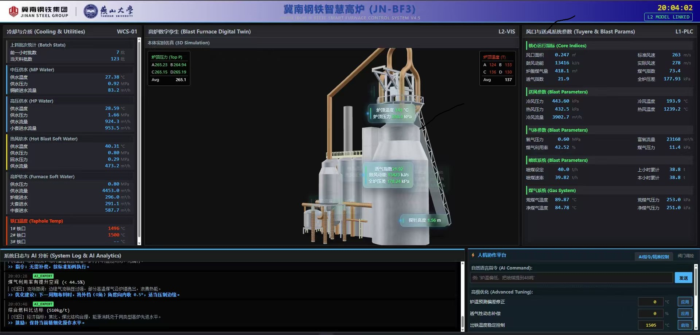

基于大模型的机械臂智能控制
面向视觉、语言和动作融合的智能控制，研究基于大模型的任务理解、场景感知、动作规划和机械臂执行，让机器人能够在开放环境中完成可泛化任务。
燕山大学 · 电气工程学院 · 人工智能研究小组
我们聚焦基于大模型的智能控制、机械臂自主操作、高炉大模型和行业垂直大模型落地，把机器学习、模式识别和工业过程建模能力转化为可验证、可部署、可交互的智能系统。
Research Focus
课题组正在从“工业过程智能建模”向“大模型驱动的具身智能与行业智能体”延展，目标是在高价值工业场景中形成可落地的算法、系统和工程方案。
面向视觉、语言和动作融合的智能控制，研究基于大模型的任务理解、场景感知、动作规划和机械臂执行，让机器人能够在开放环境中完成可泛化任务。
面向高炉炼铁等复杂工业过程，融合冶炼机理、运行数据和领域知识，构建可解释、可预测、可辅助决策的工业大模型。
围绕钢铁冶金、机械制造和智能装备，把大模型能力落到数据治理、质量预测、工况诊断、智能调度和人机协同决策中。
研究统计机器学习、深度学习、弱监督学习和多输入多输出建模，为数据稀缺、标签不完备和复杂耦合系统提供算法支撑。
Demonstrations
这些视频展示了课题组在机械臂任务执行、视觉感知、移动平台与仿真验证方面的探索。企业合作可以围绕真实工位、柔性抓取、智能分拣、装配辅助和工业巡检等场景展开。
我们关注的不只是模型指标，而是大模型如何理解现场任务、如何接入传感器和执行机构、如何在不确定环境中稳定完成动作。
面向真实空间中的目标定位、路径执行与操作任务。
探索移动底盘与机械臂协同的具身任务能力。
围绕感知、规划和控制链路进行实验验证。
用仿真环境快速验证动作策略和抓取流程。
面向目标接触、末端执行和动作稳定性的测试。
围绕机械臂末端定位和动作反馈开展验证。
面向日常物体识别、抓取与放置的基础能力。
在多物体环境中验证感知和动作决策链路。
用于展示机械臂对不同目标的操作适应性。
面向工位环境中的任务分解和执行验证。
Industry Collaboration
课题组兼具算法研究、工业数据建模和工程验证基础，适合与企业共同推进从问题定义、数据分析、模型研发到现场部署的完整合作。
建设面向高炉炼铁过程的智能建模、炉况诊断、质量预测、节能减排和辅助决策系统。
围绕柔性抓取、智能装配、检测辅助、移动操作和人机协同，开展基于大模型的智能控制与控制算法落地。
把企业经验、工艺机理、历史数据和多模态信息接入大模型，形成面向垂直场景的智能体。
面向设备、产线和工艺过程，开发质量预测、状态识别、参数优化和故障预警模型。
围绕高炉运行监测、炉况分析、系统日志、AI 诊断与人机协作控制，课题组正在推进高炉大模型与钢铁工业现场知识、实时数据和操作经验的融合应用。

Profile
李军朋，燕山大学电气工程学院教授，博士生导师、硕士生导师，河北省杰出青年科学基金获得者。荣获河北省新时代“冀青之星”、燕山大学“新锐工程”等荣誉。
2006 年至 2010 年在燕山大学电气工程学院生物医学工程专业攻读学士学位，2010 年至 2016 年在燕山大学控制科学与工程专业攻读博士学位。2016 年起在燕山大学电气工程学院任教，历任讲师、副教授，2020 年 11 月起任教授。
近年来发表 SCI 期刊论文 30 余篇，Google Scholar 收录成果 59 项，其中包括 26 篇 IEEE Transactions 论文；申请国家发明专利 19 项，其中授权 14 项，授权国际（美国）发明专利 1 项，登记软件著作权 3 项。部分技术成果已推广应用到多个钢铁企业，并获得河北省科技进步一等奖。
Teaching & Mentoring
主讲“模式识别”，帮助学生建立从特征表达、分类识别到智能系统应用的基础能力。
主讲“最优化原理”，面向机器学习、智能控制和工业过程建模中的优化问题训练理论基础。
指导学生获得全国大学生电子设计竞赛国家一等奖和河北省一等奖，重视从课堂知识到创新实践的转化。
围绕大模型、具身智能、工业智能建模等方向，培养学生的问题抽象、代码实现、系统验证和论文写作能力。
Selected Publications
Projects
围绕高炉炼铁过程，研究大模型、工业知识、时空数据和机理模型的融合，为钢铁企业提供智能诊断、预测和决策支持。
围绕视觉-语言-动作模型、机器人任务规划、末端控制和场景泛化能力，开展从仿真到实物的具身智能研究。
河北省自然科学基金重点项目，项目编号 F2025203121，主持。
国家自然科学基金面上项目，项目编号 62473327，主持。
河北省自然科学基金杰出青年科学基金，项目编号 F2022203036，主持。
河北省自然科学基金京津冀合作专项，项目编号 F2021203109，主持。
国家自然科学基金面上项目，项目编号 62073276，主持。
国家自然科学基金青年项目，项目编号 61603330，主持。
Join Us
课题组欢迎对大模型、具身智能、机器人控制、机器学习、模式识别和工业智能有热情的同学加入。我们希望学生既能做扎实算法研究，也能把模型放进真实系统中验证。
Contact
欢迎企业围绕工业大模型、机械臂智能控制、钢铁冶金智能化、智能装备升级等方向开展合作；也欢迎有志于人工智能和具身智能研究的学生联系课题组。